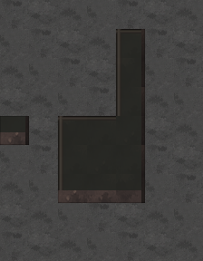
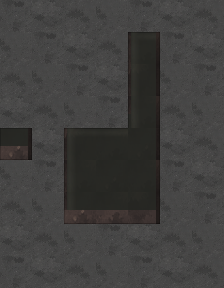

<!doctype html><html lang="ko"><meta charset="utf-8"><meta name="viewport" content="width=device-width,initial-scale=1">
<title>뒤집힌 ㄴ자 벽 · 자연스러운 돌 명암</title>
<style>
*{box-sizing:border-box}body{margin:0;background:#141a1e;color:#e0e8e6;font:15px/1.65 system-ui}main{max-width:1260px;margin:auto;padding:22px}h1{font-size:25px;margin:0 0 6px}h2{font-size:19px;margin:0 0 10px}p{color:#aebfbd;margin:5px 0 14px}nav{display:flex;gap:8px;flex-wrap:wrap;margin:16px 0}button,a{font:inherit;color:#e4ece9;background:#293b38;border:1px solid #708e84;padding:8px 13px;text-decoration:none;cursor:pointer}button[aria-pressed=true]{background:#466457;border-color:#b0cfb8}.compare{display:grid;grid-template-columns:1fr 1fr;gap:18px}.card{min-width:0;padding:15px;background:#1e2a2e;border:1px solid #4b6661}.card:last-child{border-color:#96b8a2}.viewport{overflow:auto;height:600px;background:#10171b}.viewport img{display:block;width:448px;max-width:none;height:auto;image-rendering:pixelated}footer{font-size:13px;color:#a8bbb7;margin:18px 0}.badge{color:#bedfc8}@media(max-width:760px){.compare{grid-template-columns:1fr}.viewport{height:590px}main{padding:15px}}
</style><main>
<h1>뒤집힌 ㄴ자 벽 · 자연스러운 돌 명암</h1>
<p>좁은 테두리를 지우고 기존 돌 무늬에 넓고 약한 명암을 얹었습니다. 벽 높이와 아래쪽 갈색 앞면은 유지했습니다.</p>
<nav><button data-zoom="1" aria-pressed="false">원본 크기</button><button data-zoom="2" aria-pressed="true">2배 확대</button><a href="../wall-audit85/?sample=0&cx=33&cy=39&zoom=2">원래 지도 보기</a></nav>
<div class="compare"><section class="card"><h2>앞선 시안 86</h2><div class="viewport"></div></section><section class="card"><h2 class="badge">수정 시안 87 · 부드러운 돌 명암</h2><div class="viewport"></div></section></div>
<footer>이 벽에만 적용한 비교 시안입니다. 다른 벽·지형과 기존 128맵 검사본은 그대로 유지했습니다.</footer>
</main><script>
document.querySelectorAll('[data-zoom]').forEach(button=>button.onclick=()=>{const zoom=Number(button.dataset.zoom);document.querySelectorAll('.viewport img').forEach(image=>image.style.width=`${224*zoom}px`);document.querySelectorAll('[data-zoom]').forEach(other=>other.setAttribute('aria-pressed',other===button));});
</script></html>
